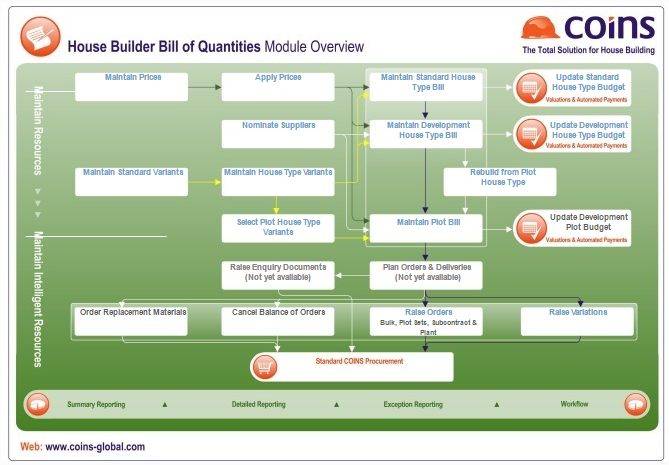

Bill of Quantities Overview
House Builders Bill of Quantities provides estimators, surveyors and buyers with an integrated solution for managing resource requirements involved in housing construction.
Bill of Quantities allows you to:
It offers flexibility to incorporate both lump sums and detailed bills of quantity for materials, subcontract, and .
BOQ Module Overview Diagram

BOQ Interfaces with other modules
In conjunction with the modules Procurement, Financials and Valuations and Automated Payments (VAP), the whole process from initial estimate through procurement to payment can be managed seamlessly.
The high level of integration with the rest of significantly increases the use which can be made of the information stored, allowing buyers and estimators to access all relevant information from the database subject to security constraints.
Bill of Quantities requires Procurement to be configured.
Key Business and Functional Processes Supported
- Maintain bills of quantity
- Raise orders
- Raise variation orders
- Maintain and apply prices
- House type variants
- Update VAP budgets
- Workflow activities, emails and alerts
- Dynamic reporting
- VAP budgets, valuations and payments can be updated from BOQ
- Material and subcontract orders can be generated in Procurement
- Orders can feed into the module
Estimating
The Bill of Quantities module can be used to produce estimates for house building projects, giving flexibility to work at different levels of detail for different items as required.
Estimates may include the following types of cost:
- Materials
- Subcontract
- Plant
- Labour
- Preliminaries
Key estimating features include:
- Detailed item lines can be directly input, copied from other plots or house types, or imported from spreadsheets. They can also be exported to spreadsheets.
- Dim sheets can be used to calculate quantities and stored to support the bill detail.
- Wastage factors can be built in to material quantities with labour values based on net quantities and material values based on gross quantities.
- Prices can be input either net or gross (with separate discount).
- Free of charge items can be flagged so that any unpriced items can be identified.
- Prices can be held at global, company or site level either as a general or supplier-specific price.
- Prices can be indicated as estimated or agreed.
- Multiple levels of “Intelligent Resources” allow for composite items such as square metres of cavity wall to be incorporated in bills.
- House type variants allow for different versions of a standard house type to be managed without duplication of unaffected bill items.
- Special facilities are included for materials which require lengths to be specified (for example, timber).
- Incorporate non-plot costs using dummy house types and plots.
- Update VAP budgets from the bill in part or in full and store snapshot of the bill for later enquiry/reporting.
- Flexible reporting using the Open Architecture reporting toolset.
Purchase Ordering
The Bill of Quantities module can be used in conjunction with Procurement to automatically generate orders for house building developments from the bill of quantities.
Several types of purchase orders are produced:
- Materials
- Subcontract
- Variation orders
- Cancellation orders
Key purchase order features include:
- See at a glance which packages and items have been ordered for which plots with easy access to full details of related bill items, orders, variation orders, deliveries and invoices.
- Nominate suppliers and apply agreed prices to bill items either just before raising the order or as soon as the information is available.
- Raise orders from bills of quantity for bulk materials (as a total quantity), plot sets and subcontracts.
- Highly configurable format for printing of orders.
- Add clauses, text and other information to orders in a flexible but controlled process.
- Raise variation orders from amended bills of quantity for quantity and price changes as well as for lines added or deleted and resources substituted.
- Easily cancel the balance of orders for undelivered plots.
- Re-order replacement materials where required as a result of damage, theft and so on (subject to appropriate security controls).